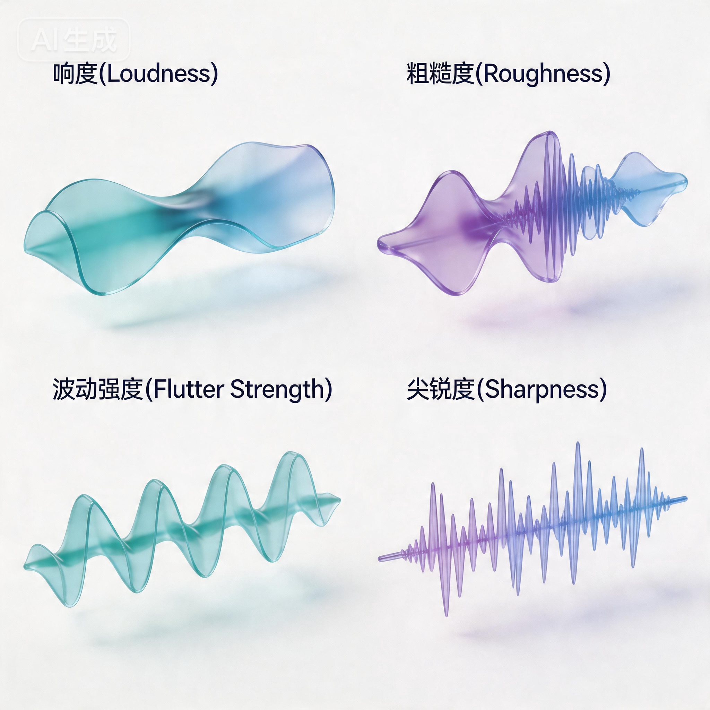
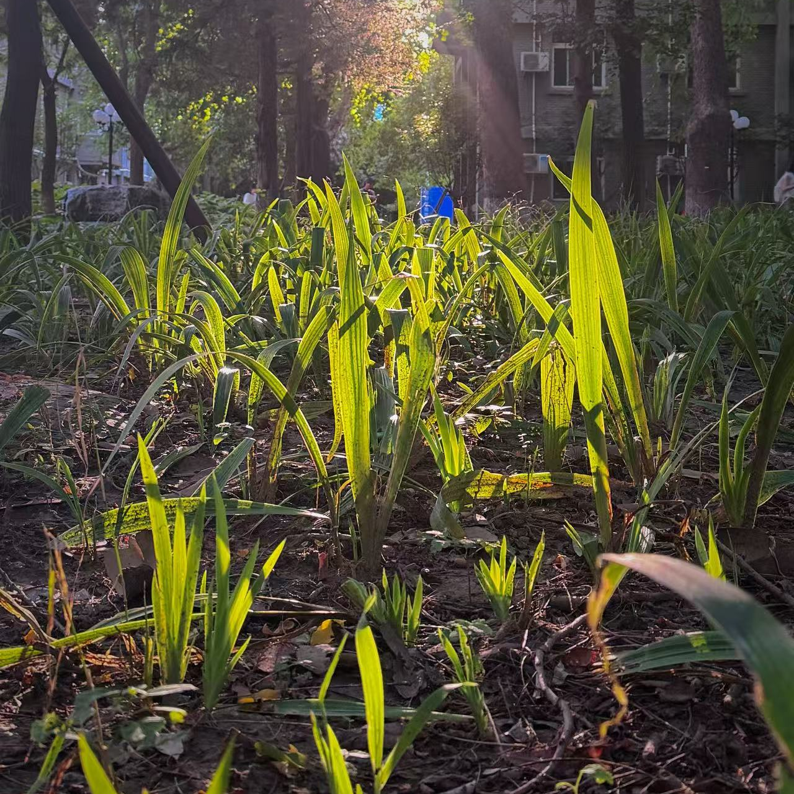

01
双耳录音
使用 KEMAR 仿真人头麦克风，在目标空间静默录音 5 分钟，还原人耳真实空间听觉，捕捉 HRTF 头部相关传递函数，构建沉浸式声场记录。
48 kHz / 24-bit
双通道 XY
你听过校园里的声音吗？
Soundscape Narratives · CUC
从人出发，以数据还原，重建声景的完整叙事

使用 KEMAR 仿真人头麦克风，在目标空间静默录音 5 分钟，还原人耳真实空间听觉，捕捉 HRTF 头部相关传递函数，构建沉浸式声场记录。
采用 NTI XL2 声级计以 A/C 计权连续采集等效声压级 Leq、最大值 Lmax、背景噪声 L90，构建时间序列剖面，量化环境噪声动态变化。
通过 ArtemiS Suite 提取响度、粗糙度、波动强度、尖锐度四项心理声学指标，基于 Zwicker 模型实现主观听觉感受的客观量化。
声景不是背景——场所精神的音频指纹。— R. Murray Schafer, The Soundscape: Our Sonic Environment
自然主导声景，以水声、鸟鸣为主，环境静谧舒适。
人类主导声景，人声、活动噪音较多，声压级偏高。

自然与人类声景过渡区，风声、虫鸣与远处人声混合。
短时连续采样（10分钟窗口），三处地点同步测量
数据基于连续声压级采样（Leq）
点击标记点查看详细参数 · 切换时段观察空间变化
拖拽旋转视角 · 滚轮缩放 · 切换声源分轨
声音不是背景，而是感知结构。
环境不仅被看见，也被听见。